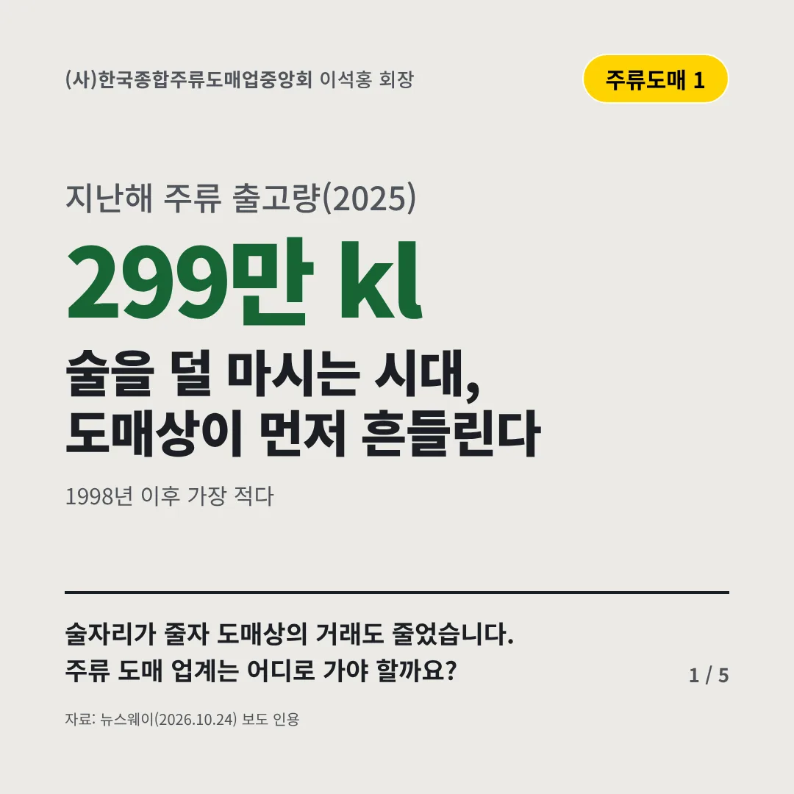
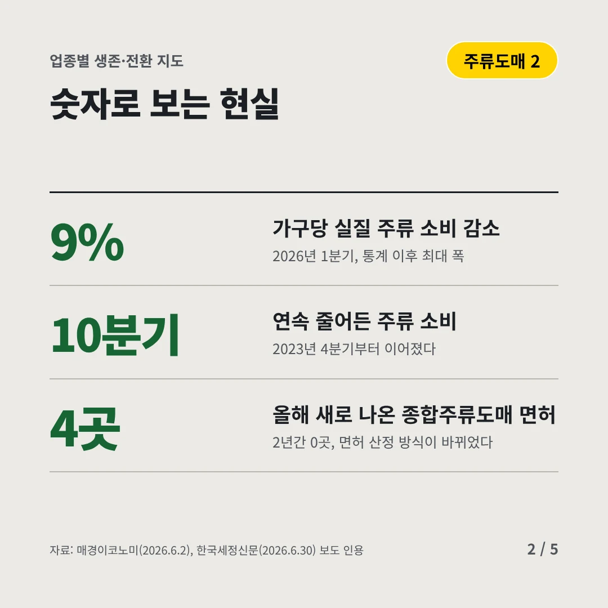
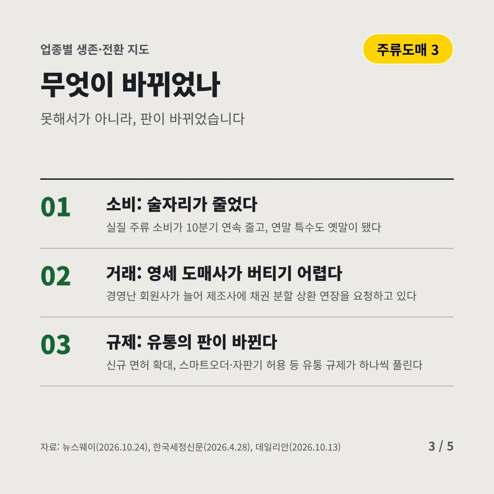
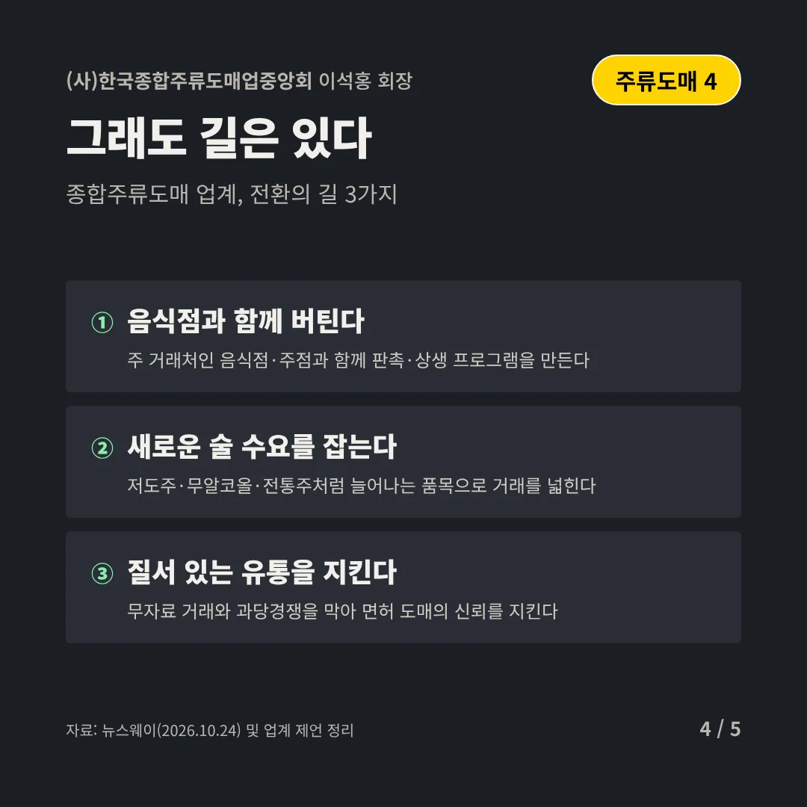
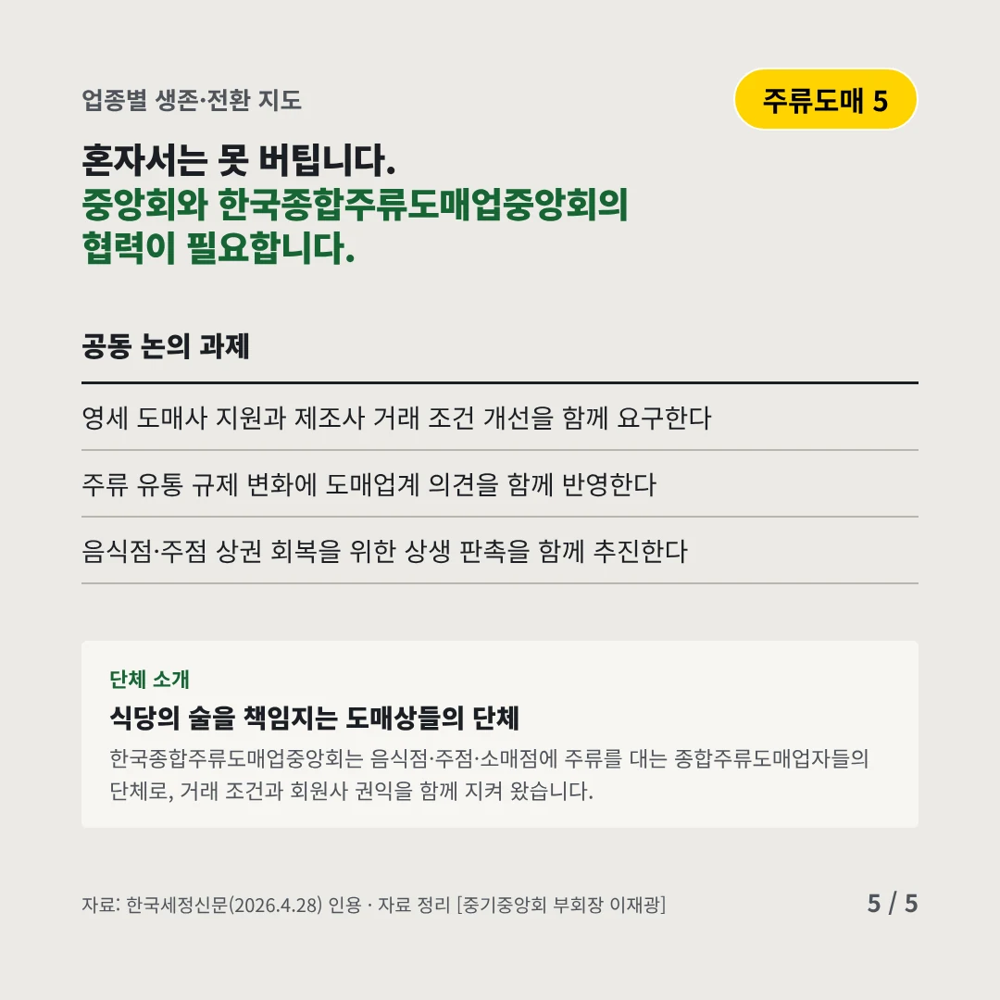
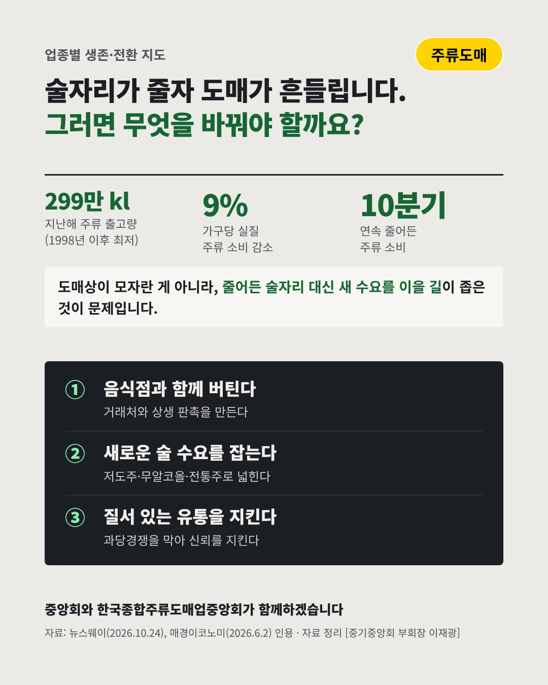

(사)한국종합주류도매업중앙회이석홍 회장
술을 덜 마시는 시대, 도매상이 먼저 흔들린다
299만 kl 지난해 주류 출고량(2025)






술자리가 줄자 도매상의 거래도 줄었습니다. 주류 도매 업계는 어디로 가야 할까요?
숫자로 보는 현실
- 9%가구당 실질 주류 소비 감소2026년 1분기, 통계 이후 최대 폭
- 10분기연속 줄어든 주류 소비2023년 4분기부터 이어졌다
- 4곳올해 새로 나온 종합주류도매 면허2년간 0곳, 면허 산정 방식이 바뀌었다
무엇이 바뀌었나
- 소비: 술자리가 줄었다실질 주류 소비가 10분기 연속 줄고, 연말 특수도 옛말이 됐다
- 거래: 영세 도매사가 버티기 어렵다경영난 회원사가 늘어 제조사에 채권 분할 상환 연장을 요청하고 있다
- 규제: 유통의 판이 바뀐다신규 면허 확대, 스마트오더·자판기 허용 등 유통 규제가 하나씩 풀린다
그래도 길은 있다
- 음식점과 함께 버틴다주 거래처인 음식점·주점과 함께 판촉·상생 프로그램을 만든다
- 새로운 술 수요를 잡는다저도주·무알코올·전통주처럼 늘어나는 품목으로 거래를 넓힌다
- 질서 있는 유통을 지킨다무자료 거래와 과당경쟁을 막아 면허 도매의 신뢰를 지킨다
한 장 요약

단체 소개
한국종합주류도매업중앙회는 음식점·주점·소매점에 주류를 대는 종합주류도매업자들의 단체로, 거래 조건과 회원사 권익을 함께 지켜 왔습니다.
자료: 뉴스웨이(2026.10.24), 매경이코노미(2026.6.2), 한국세정신문(2026.6.30), 한국세정신문(2026.4.28), 데일리안(2026.10.13)